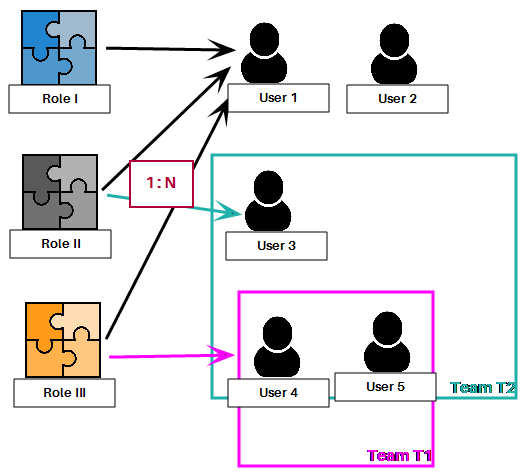
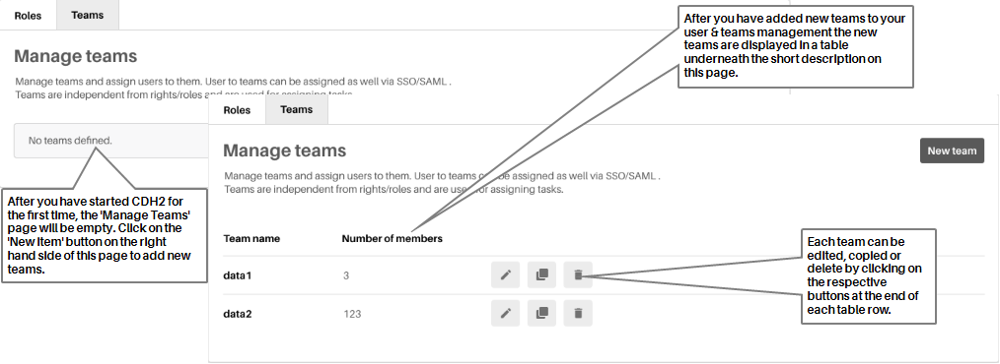
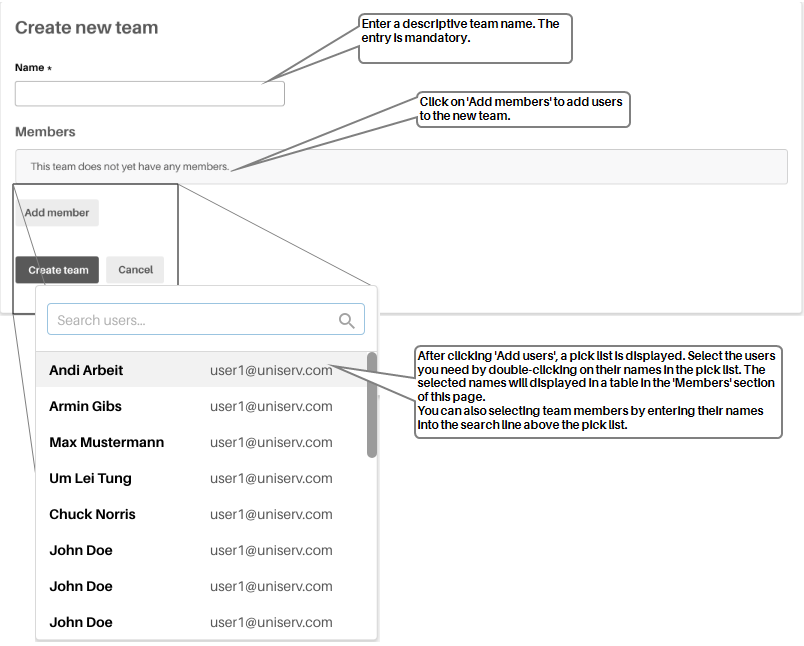
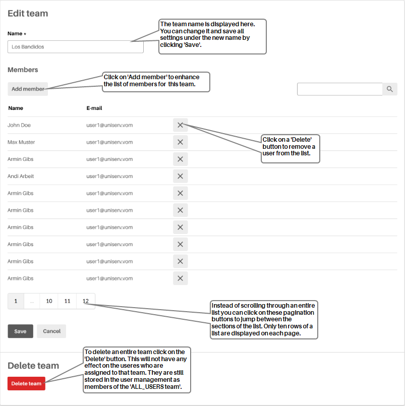

Team management
In CDH2 users can be grouped in Teams. These teams are independent from any rights & role concept of CDH2 i. e. it is not possible to assign rights resp. roles to teams.
The CDH2 team management is supposed to assign tasks to a team or filter data according to teams competencies (e. g. records, entities, attributes). A user can belong to multiple teams. By default a user belongs to an “ALL-Users team”. This is an implicit team predefined by the system.

The relation between roles and users are defined as a 1 : N relation, i. e. a user can have multiple roles.
|
Important notice: |
You will need administrator rights to get assign team memberships to CDH2 users. |
The CDH2 teams management provides you with the following functions:
|
New team: |
Click the 'New team' button to open the 'Create new team' page. There you can define all necessary settings for a new team that should be added to the list of teams. |
|
|
An 'Edit' button is attached to each line. Click on the button to open the 'Edit team' page. There you can change all necessary settings for the respective team. |
|
|
The 'copy' button can be used to copy a complete team with all settings. This can be useful, if you want to create a new team by saving the content and the settings of an existing one. In some case s it might be easier to edit an existing instead of creating a new one. |
|
|
You can delete teams by clicking on one of the 'Delete' buttons that are attached to each line. |

Example:
|
Team name: |
Team names defined by the system administrator. |
|
Number of members: |
Number of users who are assigned to the respective team. |
After clicking on 'New team' the 'Create new team' page will appear.
As a system administrator you will have to add teams to your CDH2 team management. In this case, you have to define the name of the team and its users. All users can see to which teams they belong in their own user profile, but they are not able to change these entries.
Enter a descriptive name in the 'Name' input line. This entry is mandatory.
Use the 'Add member' button to add new users to a team. A pick list of available users will be displayed. This list is identical with the list of users that was defined in the CDH2 user management.
As a result a 'Member' record will be created and added to the 'Members' section on the 'Create new team' page. The user profile will be updated automatically. The 'Member' record consists of the name of the user and the respective email account.
As soon as you added all members to your new team click on 'create team' to confirm your settings and save the new team.
Click 'Cancel' to abort.

After clicking on one of the 'Edit' buttons on the 'Team management' page, the 'Edit team' page will appear. You might as well using the 'Copy' button in the first place to create a copy of an existing team. You can edit that copy the same way.
As a system administrator you might have to change the settings for an existing team. After you saved the modified team settings these changes, the affected users will see those changes in their user profile.
Decide whether you want to keep the existing team name or to change it. Enter a descriptive name in the 'Name' input line. This entry is mandatory.
Use the 'Add member' button to add a new users to the respective team. The users can be taken from a pick list.
To remove members from a team click on the respective 'Delete' button that is attached to each member record.
Be aware, that only ten member records will be displayed on a single page. For longer lists use the pagination buttons to scroll through the entire list.
Click on 'Save' to confirm and save your changes.
Click 'Cancel' to abort.
To delete an entire team Click the red 'Delete' button.
